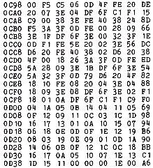

Nascom Journal |
August 1981 · Ausgabe 8 |
Eine so rege Beteiligung am Spiele-Preisausschreiben hatten wir nicht erwartet. Um so schwerer fiel uns natürlich auch die Auswahl des Gewinners. Nachdem wir uns zwischen zwei Favoriten überhaupt nicht mehr entscheiden konnten, half MKS- Systemtechnik durch das Aussetzen eines weiteren Preises. Alle Einsendungen werden im Laufe der Zeit veröffentlicht , und jeder Einsender erhält als „Trostpflaster“ eine Cassette mit den Spielen, die auf seinem System laufen.
Und hier sind nun die beiden Gewinner:
Herr Markus Caesar
_________ __
____ Leichlingen
Herr Caesar hat uns ein äußerst umfangreiches BASIC Programm geschickt, das er „STAR TREK“ nennt. Es ist ein sehr unterhaltsames Weltraumspiel. Wir werden es im nächsten Heft vorstellen und möglicherweise ein Listing abdrucken. (Das ist eine Platzfrage). Jedenfalls werden Sie die Möglichkeit haben, das Programm auf Cassette zu beziehen. Herr Caesar hat sich bereit erklärt, gegen Einsendung eines Freiumschlags und einer Cassette das Programm zu kopieren. Allerdings lädt Herr Caesar im Nascom2 Format; wir werden es uns aber auch ins Nascom 1 Format kopieren lassen.
Mit vielleicht nicht soviel Action, dafür aber in einem ausgeklügelten Maschinenprogramm hat uns
Herr Christoph Rau
______. __
__ Bonn
sein Spiel „Reversi“ eingesandt. Das Spiel selbst ist wohl nicht mehr ganz neu, aber er hat es sehr interessant aufbereitet. Wir haben es in diesem Heft in der „Spielecke“ abgedruckt, die von „Anti-Spielern“ aus dem Heft entfernt werden kann. Herr Rau gibt Ihnen dort selbst eine Einführung zu seinem Spiel.
Beide Gewinner erhalten demnächst ihr Schachprogramm nach Wahl.
Die Redaktion ist schon dabei, das nächste Preisausschreiben
auszuknobeln. Vielleicht hätten einige Leser hierzu interessante
Vorschläge.
Gerade noch rechtzeitig für diese Ausgabe ist das angekündigte Maschinen-Programm für die Umwandlung von ASCII in Baudot-Code von Herrn Schreiner angekommen. Für die Verwendung mit dem Programm „Textverarbeitung in BASIC“ in diesem Heft sind folgende Änderungen vorzunehmen: 0D1B muß von 0D (Semikolon) nach 0C (Komma) geändert werden. Im BASIC Programm muß Zeile 100 lauten:
100 Doke 3192,3225
Zur Verschiebung des Programmes müssen die Werte in den Adressen 0C9C, 0CB2/3, 0CBF/CC0 und 0CE2/3 angepaßt werden. Die Ausgaberoutine DF 6F läuft nur auf Nassys.

Verkaufe 8 K BASIC auf Cassette
für DM 50.–
Tel. ____/_____ , Wiedemann
Die Autoren dieser Ausgabe:
Günter Böhm, Günter Kreidl, Wolfgang Mayer-Gürr (siehe Impressum), Gerhard Baier, _________________. __ , Tel. _____/______; Thomas E. Schreiner, ________________._, ____ Hannover, Tel. ____/______; Michael Bach, __ __________ __, ____ Stegen, Tel. _____/_____ .
Die Autoren sind für ihre Texte selbst verantwortlich.
| Seite 22 von 24 |
|---|